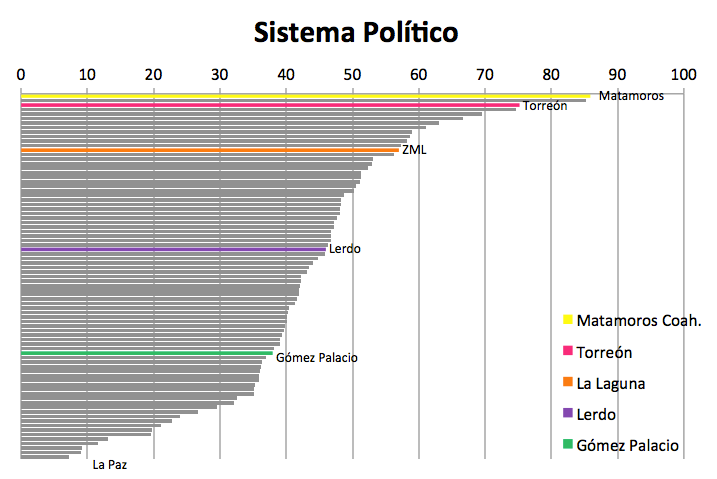
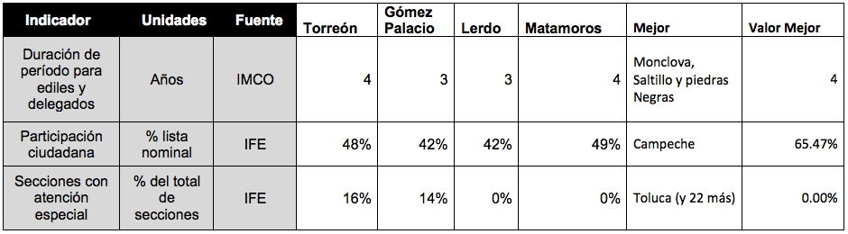

Sistema Político Estable y Funcional
Por Lic. Rodrigo González Morales, 10/06/2014
Es el subíndice mejor calificado de la zona metropolitana, ya que IMCO nos sitúa en el lugar 11 del ranking. Fundamental para ello es que Torreón y Matamoros cuenten con periodo de cuatro años para los gobiernos municipales. Matamoros por si sólo se ubicaría en el lugar 1 del ranking y Torreón en el 3, rodeado de las demás metrópolis de Coahuila como Saltillo, Monclova-Frontera y Piedras Negras. Sin embargo Lerdo se encuentra en competitividad media en este subíndice y Gómez Palacio en media baja.
Además de la duración de los periodos para ediles, este subíndice considera la participación ciudadana en procesos electorales, donde La Laguna indica 46 % del padrón electoral lejos de la participación de 65 % de Campeche pero también de la bajá participación en ciudades como Juárez o Tuxtla Gutiérrez que registraron participación del 27 %.
Por último se miden la proporción de secciones electoral con atención electoral o conflicto, siendo de 15 % para la ZML a pesar de que Lerdo y Matamoros no presentan secciones con atención especial. Sin embargo el valor está muy por debajo del 53 % registrado en La Paz, que es la ciudad peor valorada en este indicador.